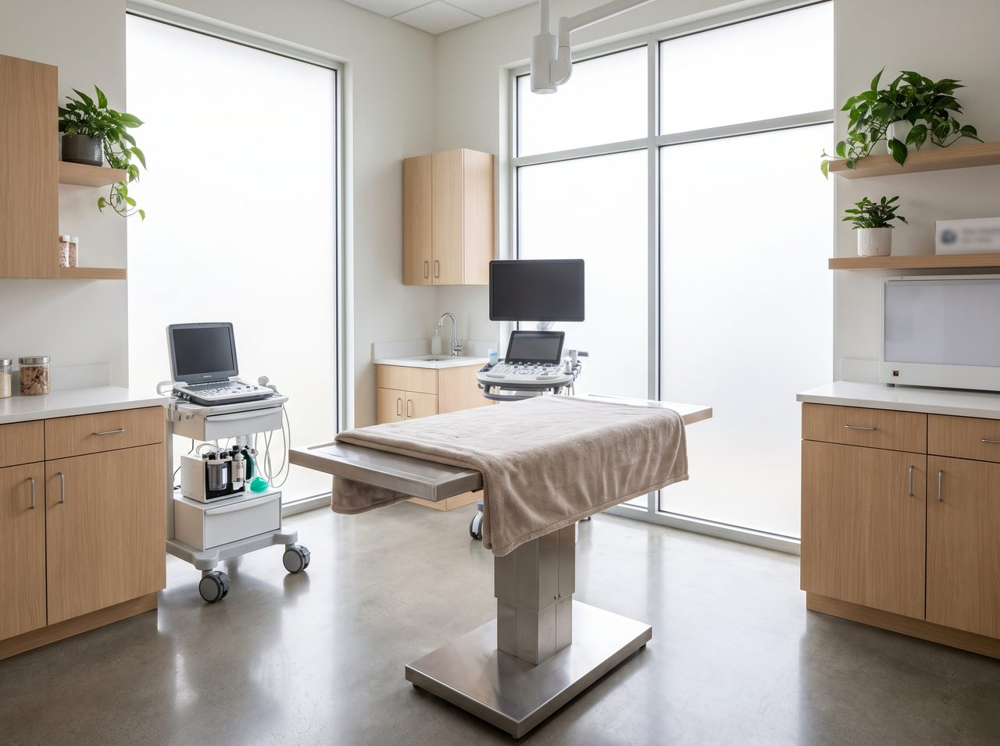

Full-service care, gently delivered.
Whatever your dog or cat needs, our team handles it in-house with modern medicine and an unhurried, low-stress touch. Here's how we help.
Wellness & Prevention
The routine care that keeps your pet healthy and catches problems early, before they become expensive or serious.
- Annual and puppy or kitten exams
- Vaccines and parasite prevention
- Nutrition and weight guidance
Sick & Urgent Visits
When something's not right, we make room the same day, find the cause, and give you a clear plan you can act on.
- Same-day sick appointments
- On-site diagnostics for fast answers
- Clear next steps, every time
Dentistry
Dental disease is the problem owners miss most. We clean, x-ray and treat gently, under safe anesthesia.
- Cleanings and dental x-rays
- Extractions and oral surgery
- At-home care coaching
Surgery
From spay and neuter to soft-tissue procedures, done in a modern suite with monitoring and pain control at every step.
- Spay, neuter and mass removals
- Soft-tissue surgery
- Full monitoring and pain management
Diagnostics & Imaging
Our in-house lab, digital x-ray and ultrasound mean answers the same day whenever possible, not an anxious week of waiting.
- In-house blood and lab work
- Digital x-ray and ultrasound
- Same-day results when we can
Senior Care
Older pets deserve extra patience. We tailor care to comfort and quality of life, and help you make good decisions together.
- Senior wellness screening
- Arthritis and pain management
- Gentle, comfort-first plans
Gentle, and never rushed.
Listen
We start by hearing what you've noticed and what matters to you. You know your pet best.
Examine gently
A calm, low-stress exam with plenty of patience and treats, at your pet's pace.
Explain in plain language
We walk you through what's going on and your options, with a clear written estimate before anything happens.
Care together
You approve the plan, we deliver it, and we follow up to make sure your pet is doing well.

Answers, often the same day.
Because our lab and imaging are right here, we don't have to send samples away and wait. That means faster answers, less worry, and treatment that can start sooner.
- On-site lab, digital x-ray and ultrasound
- Faster diagnoses, fewer return trips
- A clear estimate before we treat
Call us. We'll make room.
If your pet is sick or you're worried, don't wait it out. Call and we'll get you a same-day appointment whenever we can.